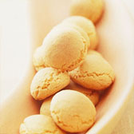

世界でたったひとつの味手作りのお菓子作りを楽しんでみませんか。
りんごクランブルパイ
サクサクのクランブルで、いつものアップルパイが大変身☆ 家族も友達も絶賛のパイをどうぞ♡話題入り&カテゴリ掲載感謝☆
「ゆずの蒸しケーキ」
カステラよりしっとり、ノンオイルだからパウンドケーキのように重くない…和菓子の浮島を旬の柚子を入れて作りました。
クリスマスプディング
イギリスの伝統的なクリスマス菓子です。味は濃厚で芳醇、その食感は「ドライフルーツが舌に絡む」とも言われる。
シュトーレン
クリスマスマーケットで買うこともできますが、熟成させることでさらにおいしさが増すシュトーレンをぜひおうちで作ってみましょう。
バナナシフォンケーキ
いつでも手に入るバナナでシフォンケーキ作り。 バナナはよく熟したものを使うと美味しく仕上がります。 手順を踏めば失敗なし！
チョコレートスフレケーキ
甘さひかえめで食べやすい、ふわふわのチョコレートスフレ。熱々のうちに食べていただきたい、冬にぴったりのデザートです。
ごまだんご
調理時間20分、カロリー41kcal。白玉粉や砂糖を使った人気レシピです！。味の素パークは味の素KKがおくるレシピ サイトです。
ボーロ
小麦粉・卵・砂糖などを混ぜて焼いた小型の丸い菓子。幼児の離乳食などに用いる、片栗粉を用いた直径1cmほどの小粒のものが代表的。
クレープ
フルーツや生クリームなどでトッピングを楽しむ、みんなが大好きなスイーツ。ちょっとやそっとじゃ破れないクレープ生地。
シュークリーム
「シュー」はフランス語で「キャベツ」の意味。かたちが似ていたことから、このように名付けられたといわれています。
アーモンドクッキー
カリッとした食感と香ばしさが魅力のアーモンド。クッキーやチョコレートなどにアーモンドが入っていると、おいしさが倍増しますよね。
チョコサンドクッキー
甘さ控え目のサクサクな塩クッキーに口どけの良いガーナチョコレートをサンドしました。洗い物なしで簡単に作れます。
オートミールクッキー
オートミールをクッキーの材料に使うことで、小麦粉だけのクッキーよりも低カロリーで栄養豊富に仕上げることができるんです！
栗蒸しようかん
栗蒸し羊羹（くりむしようかん）は和菓子の一種で、栗の甘露煮が入った蒸し羊羹。レンジで本格派！ むちむちもちもち 栗蒸し羊羹
マドレーヌ
美味しいマドレーヌ。人気で簡単な、マドレーヌのレシピを紹介します。手が込んでそうですが、意外と簡単に作ることが出来るんです。
所 在 地：姫路市東雲町1丁目34
TEL. FAX ：079-292-4232
営業時間：AM10：00～PM6：00
定 休 日：日曜日、祝日